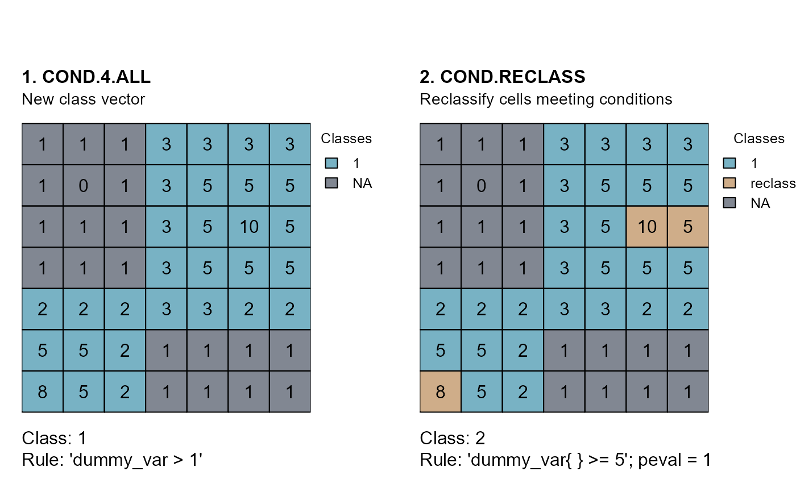

Evaluate conditions for cells of a class and reclassify them if conditions are true.
cond.reclass(
attTbl,
ngbList = NULL,
rNumb = FALSE,
classVector,
class,
cond,
reclass,
peval = 1
)data.frame, the attribute table returned by the function
attTbl.
list, the list of neighborhoods returned by the function
ngbList. Only necessary if using an absolute neighborhood
condition (see conditions).
logic, the neighborhoods of the argument ngbList are
identified by cell numbers (rNumb=FALSE) or by row numbers
(rNumb=TRUE) (see ngbList). It is advised to use row
numbers for large rasters.
numeric vector, defines the cells in the attribute table
that have already been classified. See conditions for more
information about class vectors.
numeric or numeric vector, indicates the class(es) for which conditions have to be evaluated.
character string, the conditions a cell have to meet to be
classified as indicated by the argument reclass. See
conditions for more details.
numeric, the classification number to assign to all cells that meet the function conditions.
numeric value between 0 and 1. If absolute neighborhood
conditions are considered, test cells are classified if the number of
positive evaluations is equal or greater than the percentage specified by
the argument peval (see conditions).
Update classVector with the new cells that were classified by
the function. See conditions for more information about class
vectors.
The function evaluates the conditions of the
argument cond for all cells in the classes of the
argument class.
Cells that meet the function conditions are re-classified as indicted
by the argument reclass.
Absolute test cell and neighborhood conditions can be used. The
condition string can only include one neighborhood condition ('{}')
(see conditions).
# DUMMY DATA
######################################################################################
library(scapesClassification)
library(terra)
# LOAD THE DUMMY RASTER
r <- list.files(system.file("extdata", package = "scapesClassification"),
pattern = "dummy_raster\\.tif", full.names = TRUE)
r <- terra::rast(r)
# COMPUTE THE ATTRIBUTE TABLE
at <- attTbl(r, "dummy_var")
# COMPUTE THE LIST OF NEIGBORHOODS
nbs <- ngbList(r)
################################################################################
# RECLASS.NBS
################################################################################
# Compute an example class vector
cv <- cond.4.all(attTbl = at, cond = "dummy_var > 1", class = 1)
# Reclassify cells
cr <- cond.reclass(attTbl = at, ngbList = nbs,
# CLASS VECTOR COMPUTED WITH THE RULE "dummy_var > 1"
classVector = cv,
# CELLS TO RECLASSIFY HAVE THIS CLASS
class = 1,
# ABSOLUTE NEIGHBORHOOD CONDITION
cond = "dummy_var{} >= 5", peval = 1,
# NEW CLASSIFICATION NUMBER
reclass = 2)
# Convert class vectors to rasters
r_cv <- cv.2.rast(r, cv)
r_cr <- cv.2.rast(r, cr)
################################################################################
# PLOTS
################################################################################
par(mfrow=c(1,2))
m <- c(3, 1, 5, 4)
# 1.
r_cv[which(is.na(values(r_cv)))] <- 10
plot(r_cv, type="classes", mar=m, col=c("#78b2c4","#818792"), axes=FALSE,
plg=list(x=1, y=1, cex=.80, title="Classes",legend=c("1", "NA")))
text(r); lines(r)
mtext(side=3, line=1, adj=0, cex=1, font=2, "1. COND.4.ALL")
mtext(side=3, line=0, adj=0, cex=0.9, "New class vector")
mtext(side=1, line=0, cex=1, adj=0, "Class: 1")
mtext(side=1, line=1, cex=1, adj=0, "Rule: 'dummy_var > 1'")
# 2.
r_cr[which(is.na(values(r_cr)))] <- 10
plot(r_cr, type="classes", mar=m, col=c("#78b2c4","#cfad89","#818792"), axes=FALSE,
plg=list(x=1, y=1, cex=.80, title="Classes",legend=c("1", "reclass", "NA")))
text(r); lines(r)
mtext(side=3, line=1, adj=0, cex=1, font=2, "2. COND.RECLASS")
mtext(side=3, line=0, adj=0, cex=0.9, "Reclassify cells meeting conditions")
mtext(side=1, line=0, cex=1, adj=0, "Class: 2")
mtext(side=1, line=1, cex=1, adj=0, "Rule: 'dummy_var{ } >= 5'; peval = 1")
